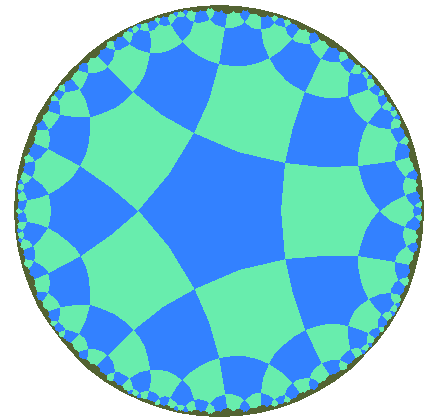
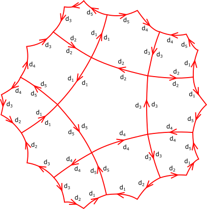
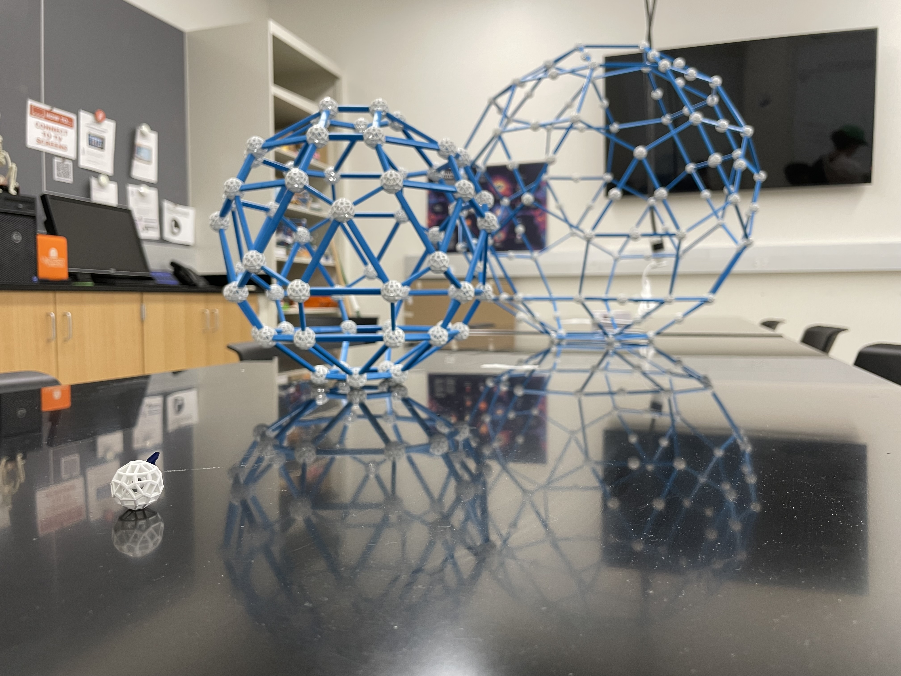
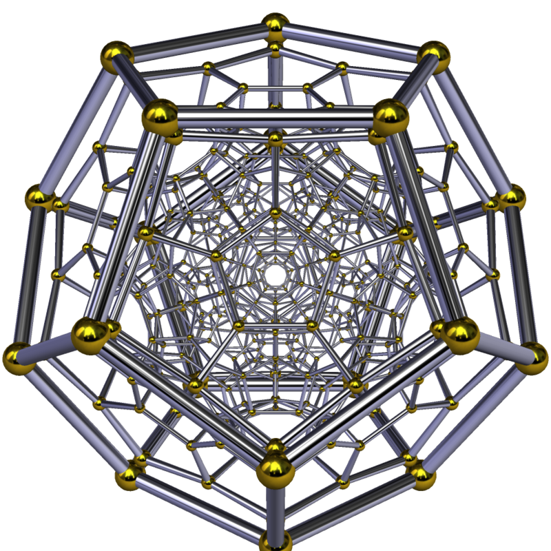
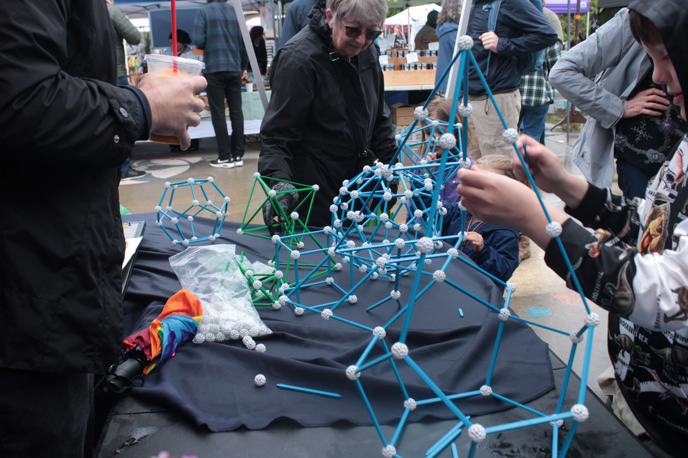

This page describes some of my past and present mentoring activities. If you are an undergraduate interested in learning more about any of these programs or working on a research project, send me an email at brandonshapiro@virginia.edu.
UVA Topology REU
In June/July 2024 I mentored a group in the UVA Topology REU. Our project focused on modeling Euclidean and hyperbolic tilings of the 2-dimensional plane using techniques from category theory. In algebraic topology, spaces are often studied using arrangements of cells with fixed labels called "presheaves" which have very convenient mathematical properties. Each tiling can be made into a presheaf in many different ways, as the labels on each polygon amount to a choice of the pattern in which the edges of the polygon should be directed. Below left is a picture of a hyperbolic tiling with 4 pentagons at each vertex, and below right is a picture showing how its edges can be labeled to form a presheaf.
 One of the projects from that Summer resulted in a paper on Categorical Tiling Theory which is now on arXiv.
UVA Geometry Lab
The Geometry Lab at UVA is a program where beginning undergraduates work on hands on geometry projects guided by graduate student and postdoc mentors. For the last three semesters I have led groups using the Zome tool to study polyhedra and polytopes (higher dimensional polyhedra).
The geometry lab also runs activities with the Starr Hill Pathways program for middle and high school students, and hosts a stand at the local farmers market.
  Directed Reading Program
I have been involved in directed reading programs at several schools, where undergraduates are paired up with grad students or postdocs to pursue personalized independent study projects. In the past I have mentored projects on constructive type theory, categorical algebra, and combinatorial topology.
Julia Robinson Math Festival
As a grad student at Cornell I volunteered at the Julia Robinson Math Festival, an amazing program bringing fun math activities to kids of all ages. Look up hexaflexagons for a fun way to fidget with math!